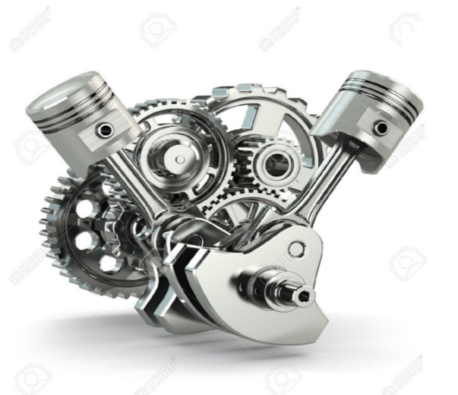

Moją pierwszą pracą była firma Werner Kenkel
Pracowałem tam w wakacje, zanim skąńczyłęm studia.
Firma znajduje się w Krzycku Wielkim i wytwarza opakowania tekturowe.
Poźniej pracowałem w Przedsiębiorstwie inżynieri sanitarnej Piotrowski.
Pracowałem tam na stanowisku automatyk.
Dzięki tej pracy zwiedziłem bardzo dużo obiektów w rejonie takie jak np:
Electrolux w Oławie, Phoenix Contact w Nowym Tomyślu,
Gestamp oraz WV we Wrześni, czy też Bridgtestone lub PolCar w Poznaniu.

Aktualnie pracuje w Firmie Spinko w Lesznie
Pracuje tam na stanowisku automatyk na utrzymaniu ruchu.
Firma zajmuje się produkcją części samochodowych, głównie turbosprężarek.
Wykonał: Artur Górny